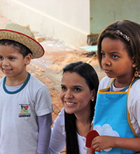

Garantir a Infância é Proteger o Futuro da Sociedade
O Estatuto da Criança e do Adolescente (ECA) estabelece a proteção dos direitos fundamentais da criança e do adolescente: vida, saúde, liberdade, educação e dignidade. Ao mesmo tempo, a lei condena a negligência, exploração, violência, crueldade e opressão.
Infelizmente, tais situações persistem em nossa sociedade e, para mudar essa realidade, é necessário o engajamento de toda a sociedade. Afinal:
- É na infância que se define o desenvolvimento cognitivo, afetivo e emocional dos indivíduos.
- Ao assegurar a proteção integral da criança, construímos um futuro menos desigual, menos violento e mais feliz para todos nós.
Nesta data, a proposta é levar essa reflexão para a escola. Vamos lá?
Atividade Proposta: Fórum Sobre o ECA
O objetivo desta ação é realizar um fórum sobre a situação da infância no município onde a escola está inserida, com a participação da comunidade escolar e de convidados envolvidos com os direitos da infância. Dessa forma, pretende-se:
- Conscientizar a comunidade escolar sobre as condições da infância;
- Promover a reflexão sobre o tema;
- Favorecer a mudança de atitude no cotidiano da escola.
 Mariana Ferreira, de Promissão (SP), reuniu alunos, familiares e a comunidade em um fórum para discutir os direitos das crianças.
Saiba Mais